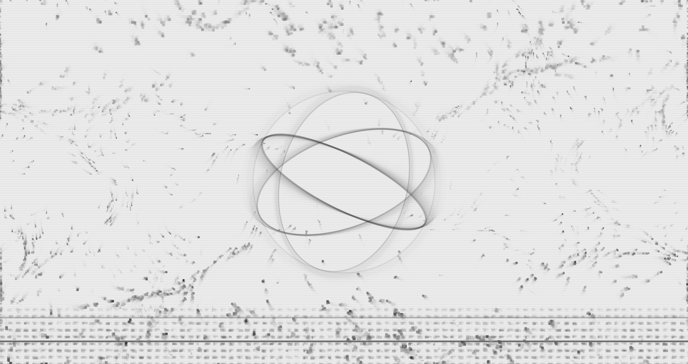
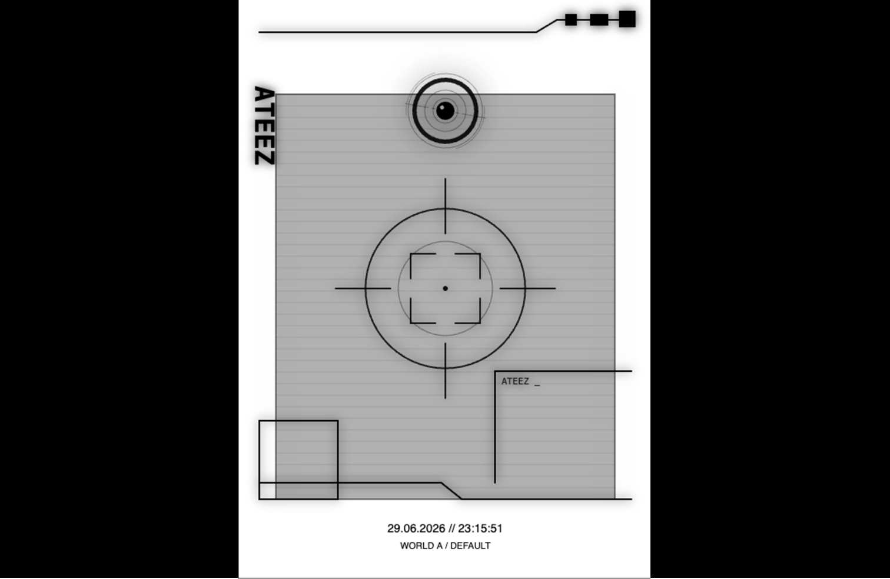
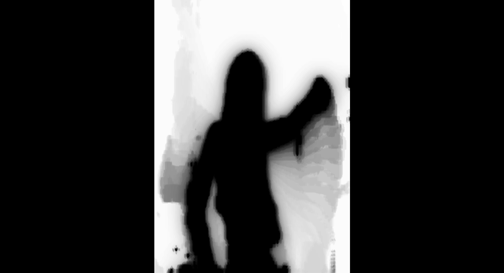

Audio Visual Engine
Transforms ATEEZ tracks into synchronized real-time visuals for projection mapping, stage backdrops and immersive event spaces. Audio frequencies drive particle systems, noise textures and patterns inspired by the ATEEZ lightstick's armillary sphere and visual lore.

Eye Booth
An interactive photobooth experience inspired by the Eye Tower surveillance system featured on ATEEZ's concert stage. Using real-time face tracking, the booth follows each visitor before capturing a personalized event photo. Inspired by the Eye Tower's symbolic role of observation and control within the ATEEZ lore, it transforms every portrait into an immersive event keepsake.

SOPRO Dance Wall
An interactive dance wall inspired by SOPRO's glowing silhouette from the latest storyline. Using real-time body tracking, visitors become luminous silhouettes that mirror every movement, encouraging them to dance with the music while bringing one of ATEEZ's newest visual motifs into the event space.

Event ID Creator
A personalized check-in experience that generates and prints a unique event ID card for every visitor. Guests select their favorite ANITEEZ character, creating a personalized pass that serves as both an official event credential and a collectible souvenir throughout the ATEEZ sendoff experience.